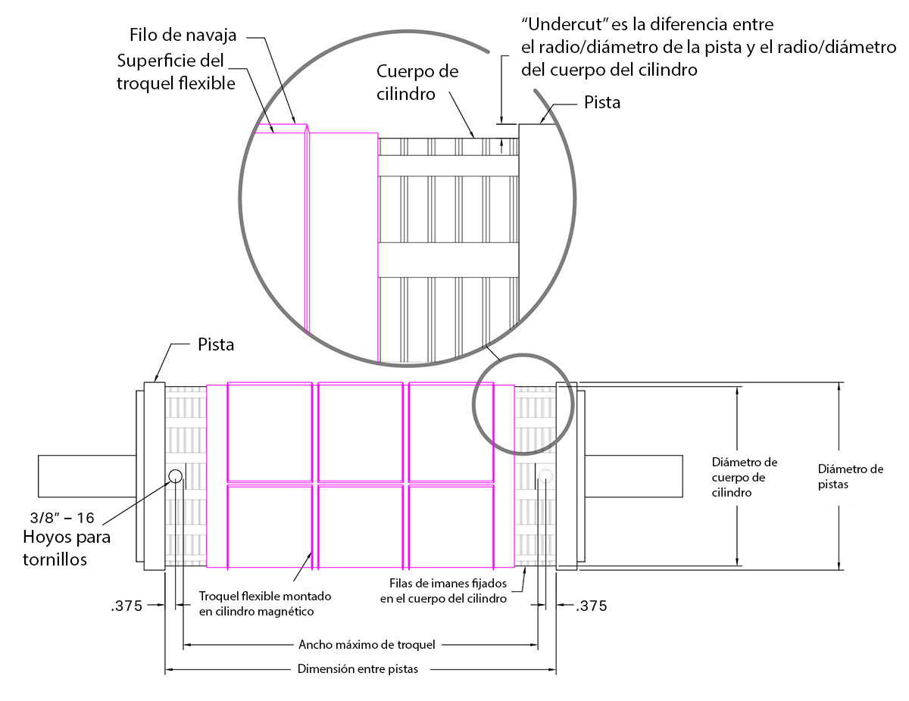

En Wilson, siempre estamos enfocados en los aspectos técnicos de flexografía. Charla técnica es su vistazo rápido a los temas claves de nuestra industria. Déjenos saber que piensa.
Volver a Recursos
Cilindro magnético y Undercut: unas consideraciones claves
Antes de pedir su cilindro magnético, asegure prestar atención al Undercut. He aquí unos puntos técnicos que se debe tener en cuenta.
Midiendo el Undercut
El Undercut de su cilindro magnético es la diferencia entre el cuerpo del cilindro y sus pistas, normalmente descrito o con los radios o con los diámetros de estas dos partes. Típicamente, esta diferencia (Undercut) es 0.019” (0.048 cm/480 micrones) entre radios, es decir 0.038” (0.096 cm/960 micrones) entre diámetros. No obstante, el Undercut puede medir hasta 0.030” (0.076 cm), por lo que es importante basar su medida en los materiales que va a cortar con sus troqueles flexibles (magnéticos).
Para determinar el Undercut que le sirve mejor, primero hay que definir el material a cortar y el diámetro del cilindro magnético que quiere comprar.

Espesor es importante
El espesor total del material (cara y respaldo) debe ser 0.009” (0.023 cm) menos del Undercut del cilindro. Por ejemplo, si el Undercut de su cilindro es 0.019” (0.048 cm), el material más grueso que se puede cortar sería 0.010” (0.025 cm) de espesor. Esto permite que el troquel flexible en sí sea 0.006” (0.015 cm) de espesor y deja 0.003” (0.0076 cm) de espacio libre entre el material y el troquel flexible. Es importante tener este espacio libre para asegurar que ni el material ni la tinta froten contra el troquel. Entonces, un material más grueso requiere un Undercut más grande.
Factores limitantes
Hay un aspecto limitante del Undercut mayor. El troquel flexible (magnético) tiene que envolver alrededor del cilindro, por lo que más Undercut significa un troquel más grueso. Esto hace más difícil envolverlo alrededor del cilindro. Troqueles de engranes pequeños pueden causar dificultades de este tipo antes de o durante la corrida. También, hay que tener en cuenta cuantas navajas corren en la misma dirección del embobinado. Con más navajas es más difícil envolver el troquel. De hecho, estas navajas pueden actuar como las vigas dobles de un puente, y no permitir que el troquel envuelva alrededor del cilindro.
¿Preguntas sobre el acero?
Si tiene preguntas adicionales o pensamientos acerca de cómo la fuerza afecta su aplicación, le invitamos a contactar el equipo técnico de Wilson. Haga clic aquí para contactar a Wilson.